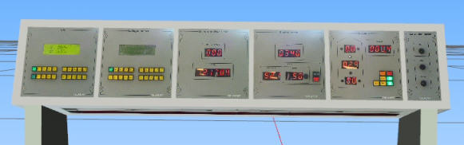
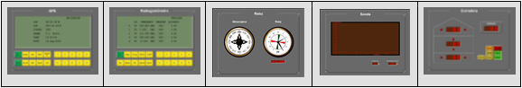

Panel de Equipos de Navegación
El Panel de Equipos de Navegación se sitúa generalmente sobre la mesa de cartas, de forma que todos los módulos que lo integran sean visibles y cómodamente operados desde esta mesa de trabajo.
Este panel puede ser real (hardware) o simulado (software).
Versión Hardware:

Este panel puede incorporar en su parte inferior un juego de lámparas blancas y rojas para la iluminación de la zona de trabajo de la Mesa de Cartas. Las lámparas empleadas llevan incorporado un dispositivo de regulación de intensidad, controlado desde el módulo de Control de Iluminación de este panel.
Está integrado por los siguientes módulos:
Versión Software:

La versión software contiene prácticamente los mismos módulos que la versión hardware, únicamente difiere en la presentación y distribución de datos.
En los siguientes apartados se describen los módulos que integran este panel.